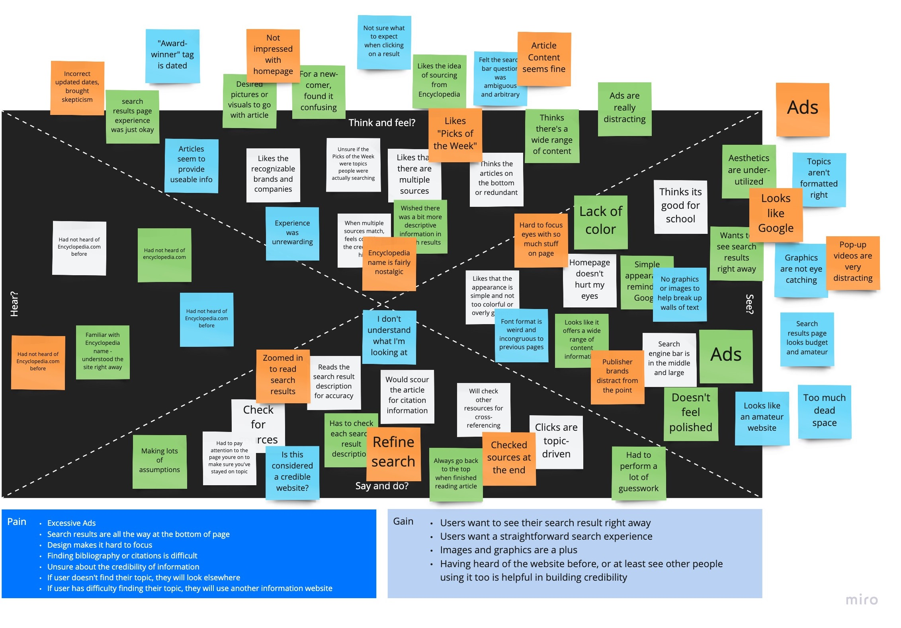
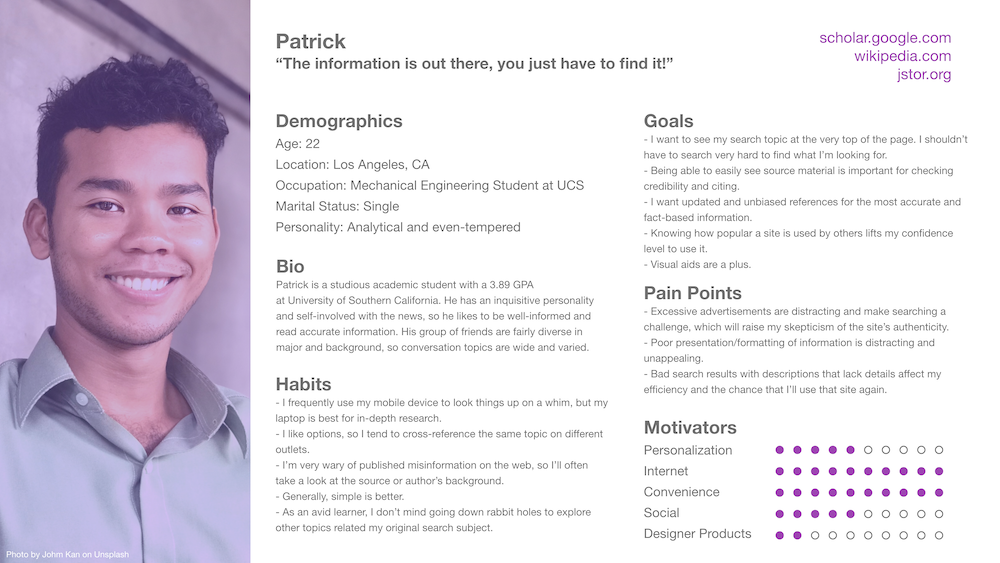
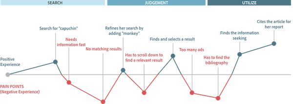
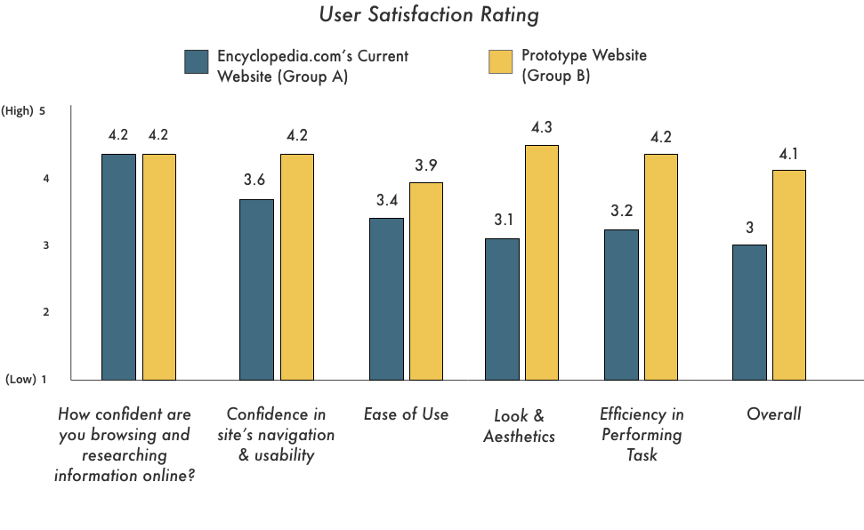

Encyclopedia.com is a free online encyclopedia that aggregates information from other published dictionaries, encyclopedias, and reference works. The website states that it offers credible information from reliable sources. However, because Encyclopedia.com provides such a poor web experience, surveyed users stated they would not use the free and credible information it provides.
"This [site] is unusable, so it doesn't matter if the information is accurate or not."
According to Fjord.net, organizations must be prepared for an inevitable shift towards “quality of trust” as a competitive advantage. With the number of reference information services available online, Encyclopedia.com is losing trust in users because of its current design. As a designer, I ask, how can I use my UX knowledge to create trust between users and this digital service?
Disclaimer: I do not work for Encyclopedia.com. The views from this case study is strictly my own and is not reflective of Encyclopedia.com. As I do not have access to their datas and metrics, this case study is not meant to be comprehensive or exhaustive in any way.
My goals for this case study was to 1) increase users’ trust in Encyclopedia.com’s website, and 2) challenge myself in human-centered design. To plan this study, I followed a five-phase design process: research, analyze, ideate, prototype, test.
I order to understand how organizations instill trust in their products and services, I performed preliminary research by reading several articles and studies about transparency and trust. Learning about those strategies not only later reinforced my design decisions, but it provided an understanding of my user’s needs in a much deeper context.
For this particular case study, I decided to plan the scope of my design around Arjen van Gaal’s four fundamentals of trust:
Benevolence: Showing that one cares about another.
Reliability: Consistency, and doing what you say you do.
Integrity: Having a set of values and doing the right thing.
Credibility: Trusting someone in a certain context because they are competent within that context.
I strategized that if I addressed the pain points discovered in my research while simultaneously fulfilling Gaal’s four fundamentals of trust, I could increase trust in Encyclopedia.com’s users.
To evaluate the current Encyclopedia.com website, I relied on usability tests and remote surveys. Four people participated in the remote usability test via Zoom, and 24 people participated in an online survey. By combining both qualitative and quantitative information, I gained a broader perspective on the website's UX issues.
Target Audience: Encyclopedia.com is an academic resource, so I screened for participants who were 18+ years old and are currently pursuing, or had completed, an undergraduate education.
Initial Findings:
|  |
Empathy Map Learned about my user by organizing participant research data and deducing patterns. |
|  |
User Persona Created a user persona as an important point of reference regarding my users' needs, experiences, behaviors, and goals. |
|  |
Journey Mapping Mapped test users' journeys to pinpoint problem areas in need of solutions. |
People want results as quickly and painlessly as possible. The site map on Encyclopedia.com was already fairly simple and straightforward, but their information architecture had issues. I began the design with low-fidelity sketches, which turned into low-fidelity wireframes.
I created some mockups and performed an A/B test survey with 25 remote survey participants. After studying the results and revising my design, I created a prototype.
The next section highlights and compares Encyclopedia.com’s current website and my re-design. To ensure trustability, I made sure that most of my design decisions supported at least one of Gaal’s four fundamentals of trust (benevolence, credibility, integrity, reliability).
Did my design improve Encyclopedia.com? Did I raise Encyclopedia.com’s trust in users? Once I had my full prototype, I conducted another user test with sixteen participants via remote survey to measure the success. The results are positive.

Findings:
I valued most the research and analysis part of the process. Despite the global circumstances that prevented in-person research, I'm appreciative of the existing technology that allowed me to perform various kinds of tests remotely, and multiple times. From the data itself, it was fascinating to learn that aspects about the site that affected me the most didn’t seem to bother others as much. Discoveries like that were good reminders to keep my opinions and personal bias in check.
I wish I asked for more specificity when gathering participant feedback. For example, test participants wanted a more “updated” and “prettier” design, so in the early stages of prototyping, I gave too much attention to the visual aspects. I was trying so hard to design something “pretty,” that I realized I lost focus of my end user and the real problems that needed addressing. I could have saved a lot of time if I had asked test participants for specific examples to support subjective feedback.
In my research, 81% of survey respondents said they typically use their mobile device to perform research. Encyclopedia.com’s current mobile view is practically unusable due to the overwhelming number of ads. As a next step, I would like to create a mobile-friendly version of the site, or even a prototype of a mobile app.
Successful relationships require trust, especially those that only exist in a digital capacity. Even though my UX solutions increased trust with users, they only scratched the surface. I believe if Encyclopedia.com expressed a more focused, transparent and devoted mission towards education and providing quality and reliable information, people would trust it even more. Part of the problem is that as it stands, Encyclopedia.com does not feel like a website operated by human beings. This leaves the website feeling unattended, resulting into visitors feeling unwelcome. With a full scope redesign, Encyclopedia.com could become a very popular online informational resource.